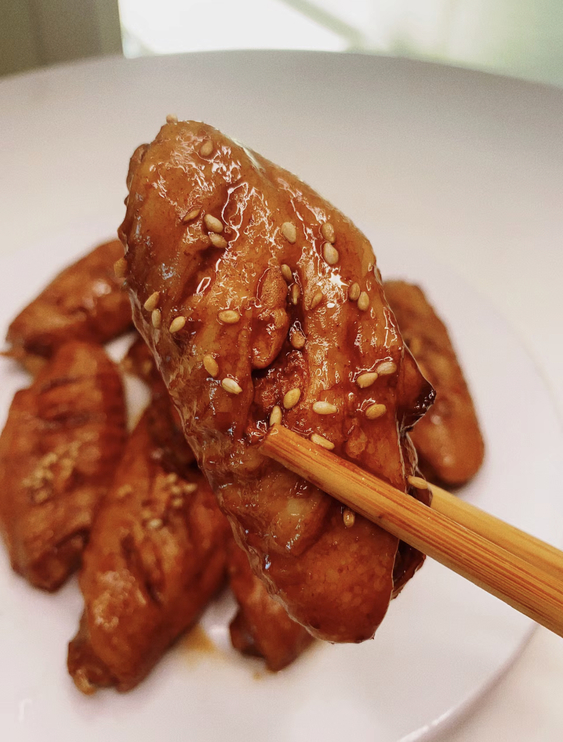
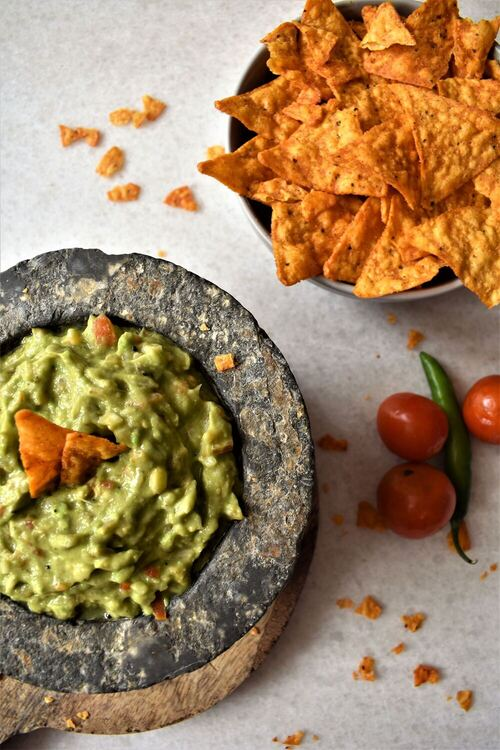
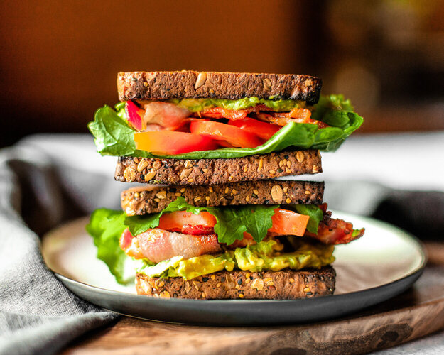

Recipes
Chicken Curry

Unlike Indian or Thai curry, Japanese curry is more savory than spicy. It's an exemplary comfort food and one of the most-loved home-cooked dishes in Japan.
Curry Ingredients:
- Skinless, boneless chicken breast
- 1 tablespoon olive oil
- 1 pinch salt and ground black pepper
- Water
- 1 package curry sauce mix
- 1 can peas
- 5 new potatoes, halved
- 1 package sliced cremini mushrooms
- 2 medium carrots, chopped
- 1 medium onion, chopped
- 2 cups jasmine rice
Curry Instructions:
- Place chicken in a large, deep skillet. Drizzle with olive oil and season with salt and pepper on both sides. Add 1/3 cup water to the pan, cover, and cook over medium heat until no longer pink in the center and the juices run clear, about 20 minutes.
- While chicken is cooking, pour 2 cups water into a microwave-safe bowl. Break curry sauce mix into pieces and add to water. Heat in the microwave on high for 3 1/2 minutes; remove and stir until sauce mix has completely dissolved.
- Remove chicken from the skillet. Cut into cubes, return to the skillet, and pour curry sauce over top. Stir in peas, potatoes, mushrooms, carrots, and onion. Bring to a boil, then lower heat and simmer until vegetables are tender, about 30 minutes.
- Meanwhile, bring remaining water and rice to a boil in a saucepan. Reduce heat to medium-low, cover, and simmer until rice is tender and water has been absorbed, 20 to 25 minutes.
- Scoop rice into bowls and serve curry on top.
Coca-Cola Chicken Wings

I learnt how to cook Coca-Cola chicken wings from my mother, and I've since tweaked her recipe to better suit my family's palate, making it less sweet. While the cooking process remains straightforward, the result is incredibly flavorful, and once you've tried it, you'll understand its delicious appeal!
Wing Ingredients:
- Chicken wings
- Scallions
- Ginger slices
- Cooking wine
- Dark soy sauce
- A can of coke
Wing Instructions:
- Wash and place chicken wings in a bowl.
- Add scallions, ginger slices, cooking wine, dark soy sauce and salt to the washed chicken wings, and mix them well.
- Cover the bowl with plastic wrap and marinate the chicken wings for 1 hour.
- Put the right amount of oil in the pot, and put the marinated chicken wings into the pot and fry it until golden brown on both sides.
- After fry the chicken wings until golden brown on both sides, then pour a can of coke into the pan and bring to a boil.
- Continue to cook for an additional 2-3 minutes until the glaze has thickened and coats the wings nicely.
- Transfer the Coca-Cola glazed chicken wings to a serving platter.
Guacamole

Guacamole is a Mexican dip made from mashed avocados, tomatoes, onions, cilantro, lime juice, and chili pepper, creating a creamy, zesty, and versatile condiment often enjoyed with tortilla chips, tacos, and more.
Guacamole Ingredients:
- Avocado
- Lime
- Salt
- Onion
- Tomato
- Cilantro
Guacamole Instructions:
- Slice three ripe avocados in half.
- Scoop them into a mixing bowl.
- Use a fork to gently mash them.
- Add the onions, tomatoes, cilantro, jalapeno pepper, garlic, lime juice and salt and stir everything together.
B.L.A.T. Sandwich

A BLAT sandwich is a delicious twist on the classic BLT, featuring crispy bacon, fresh lettuce, ripe tomatoes, and creamy avocado, all sandwiched between slices of bread for a satisfying blend of flavors and textures.
Sandwich Ingredients:
- Avocado
- Bacon
- Lettuce
- Tomato
- Bread
- Mayo
Sandwich Instructions:
- Toasted bread slice spread with mayo.
- Put sliced avocado, bacons, sliced tomatoes, lettuce on one spread of bread.
- Put the other slice of bread at the top.
Jiaozi

Chinese dumplings (Jiaozi, 饺子) are stuffed parcels made of unleavened dough and savory fillings consisting of minced ingredients like meat, egg, tofu, or vegetables. They can be boiled, pan-fried or steamed.
Jiaozi Instructions:
- Combine and knead dough until it reaches the proper consistency. Roll dough balls into flat discs.
- Mix minced pork and cabbage together to create filling.
- Place a small ball of filling in each disc. Fold dumplings shut so no filling can escape while cooking.
- Cook dumplings by boiling, steaming, or pan-frying.
- Serve on a platter with dipping sauce.